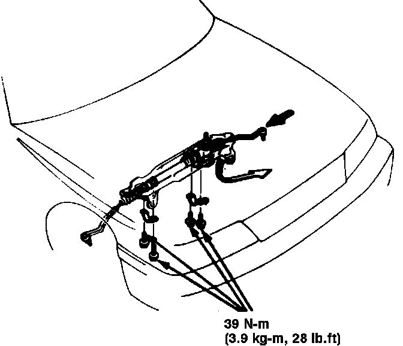

Removal and Installation
Fig. 15 Steering gear replacement. Legend:

On models equipped with air bag restraint system, use extreme care when working around steering column area to avoid activation of restraint system. All electrical harnesses for this system are covered with a yellow outer insulation, with related components located in the steering column, center console, dash panel, front fenders and rear part of vehicle. It is recommended that only authorized personnel work on vehicles with this type of restraint system.
1. Remove steering joint cover, then disconnect steering shaft from steering gear.
2. Drain power steering fluid into a suitable container, then remove steering gear shield.
3. Thoroughly clean steering gear unit and surrounding area.
4. Raise and support front of vehicle and remove front wheels.
5. Disconnect tie rods from steering knuckles using a suitable tool.
6. On models equipped with manual transaxle, remove shift extension from transaxle case, then remove spring pin to disconnect gearshift rod from transaxle case.
7. On models equipped with automatic transaxle, disconnect control cable from clamp, then remove center beam attaching bolts and the beam. The self-locking bolts must be replaced if a nut can easily be threaded past nylon locking inserts.
8. Disconnect exhaust header pipe from manifold.
9. Disconnect four hydraulic lines from valve body housing.
10. Position tie rod as far as possible to the right.
11. Remove steering gear unit attaching bolts, then slide unit to the right and lower from vehicle, Fig. 15.
12. Reverse procedure to install.